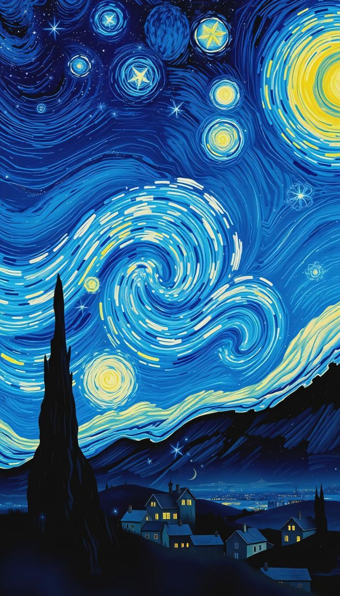
ليلة النجوم
الفنان: Vincent van Gogh
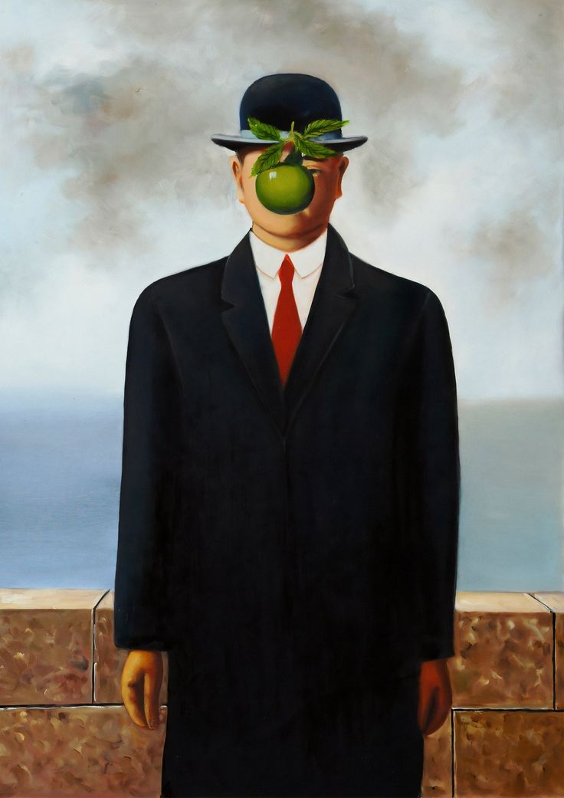
The Son of Man
الفنان: René Magritte
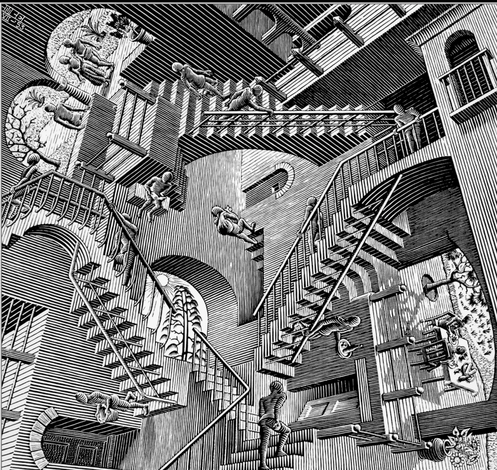
Relativity
الفنان: M. C. Escher
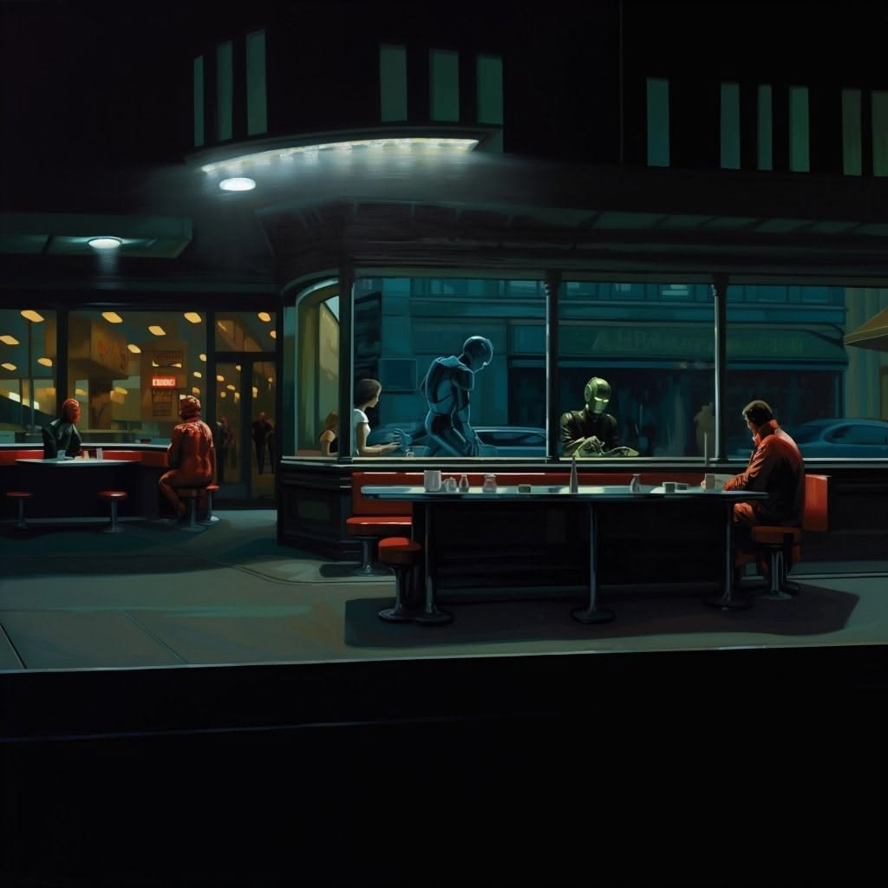
Nighthawks
الفنان: Edward Hopper

Christina’s World
الفنان: Andrew Wyeth
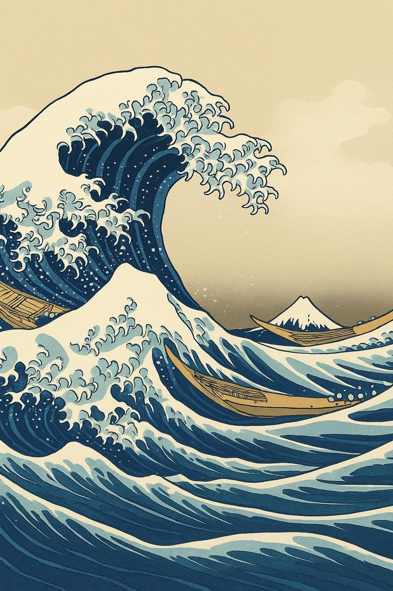
الموجة العظيمة قبالة كاناغاوا
الفنان: Katsushika Hokusai
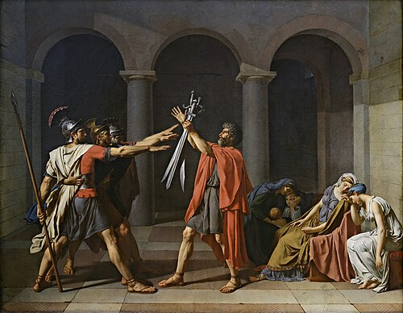
قسم الإخوة هوراتي
الفنان: Jacques-Louis David
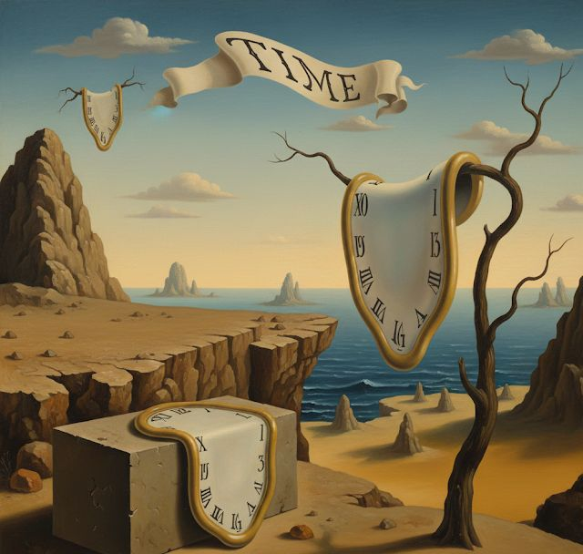
إصرار الذاكرة
الفنان: Salvador Dalí
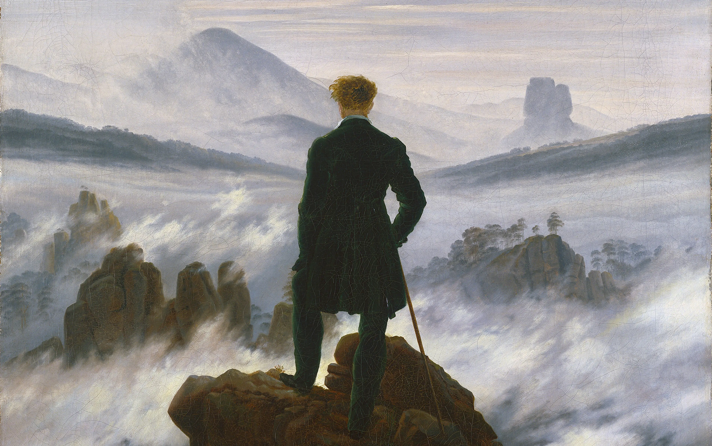
المتجول فوق بحر الضباب
الفنان: Caspar David Friedrich
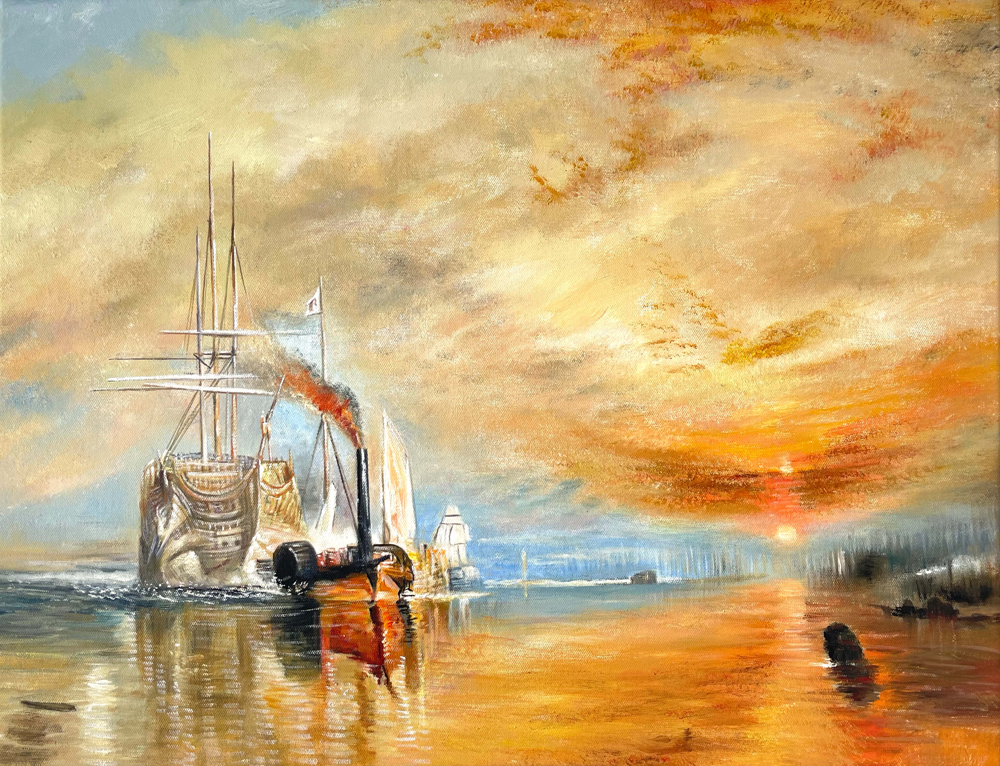
The Fighting Temeraire
الفنان: J. M. W. Turner
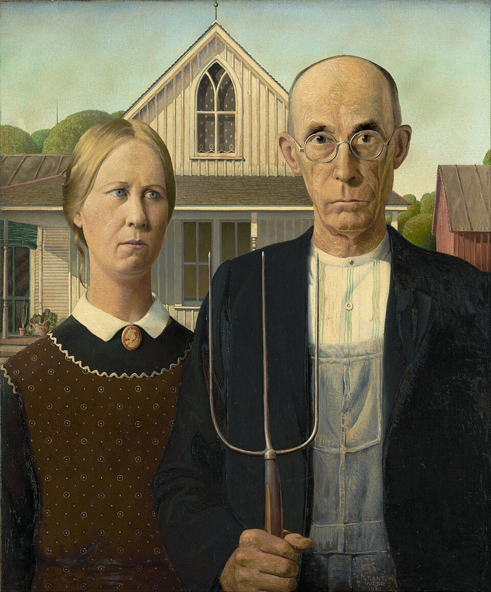
American Gothic
الفنان: Grant Wood
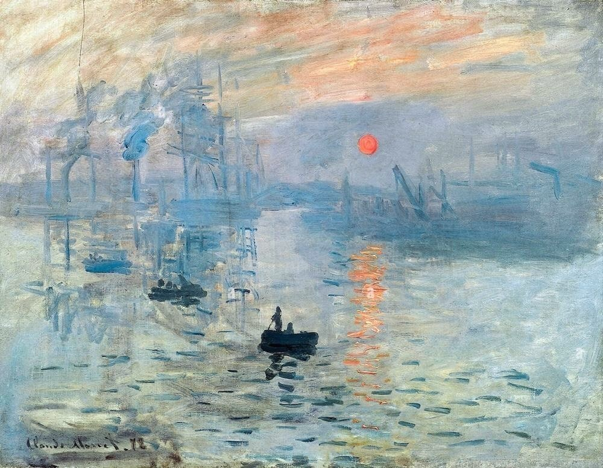
Impression, Sunrise
الفنان: Claude Monet